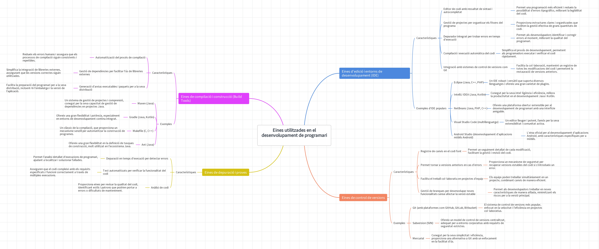

RA16 Avalua la funcionalitat que ofereixen les eines utilitzades en el desenvolupament de programari.
Eines de desenvolupament
El desenvolupament de programari requereix una sèrie d'eines que faciliten les diferents tasques del cicle de vida d'una aplicació. Aquestes eines permeten escriure, provar, depurar, compilar i desplegar programari de manera més eficient. A continuació, es detallen les principals categories d'eines i la seva funcionalitat.

Eines d'edició i entorns de desenvolupament (IDE)
🔸 Característiques
- Editor de codi amb ressaltat de sintaxi i autocompletat.
- Gestió de projectes per organitzar els fitxers del programa.
- Depurador integrat per trobar errors en temps d'execució.
🔹 Exemples d'IDE populars
- Eclipse (Java, C++, PHP)
- IntelliJ IDEA (Java, Kotlin)
- NetBeans (Java, PHP, C++)
- Visual Studio Code (multillenguatge)

Eines de control de versions
🔸 Característiques
- Registre de canvis en el codi font.
- Permet tornar a versions anteriors en cas d'errors.
- Facilita el treball col·laboratiu en projectes d'equip.
🔹 Exemples
- Git (amb plataformes com GitHub, GitLab, Bitbucket)
- Subversion (SVN)
- Mercurial

Eines de compilació i construcció (Build Tools)
🔸 Característiques
- Automatització del procés de compilació.
- Gestió de dependències per facilitar l'ús de llibreries externes.
- Generació d'arxius executables i paquets per a la seva distribució.
🔹 Exemples
- Maven (Java)
- Gradle (Java, Kotlin)
- Makefile (C, C++)
Eines de depuració i proves
🔸 Característiques
- Depuració en temps d'execució per detectar errors.
- Test automatitzats per verificar la funcionalitat del codi.
- Anàlisi de codi per trobar possibles problemes o vulnerabilitats.
🔹 Exemples
- JUnit (Java, per proves unitàries)
- Selenium (test automatitzat per aplicacions web)
- SonarQube (anàlisi de qualitat del codi)
Eines de gestió de dependències i paquets
🔸 Característiques
- Instal·lació i gestió de llibreries de manera automatitzada.
- Evita conflictes de versions entre llibreries.
🔹 Exemples
- npm (JavaScript)
- pip (Python)
- Composer (PHP)
- Gradle/Maven (Java)
Eines de gestió de projectes i metodologies àgils
🔸 Característiques
- Gestió de tasques i assignació d’equips.
- Seguiment de l’estat del projecte amb gràfics i taulers.
- Integració amb eines de control de versions.
🔹 Exemples
- Jira (Scrum, Kanban)
- Trello (Gestió de tasques)
- Asana (Planificació de projectes)
- Redmine (Seguiment d'incidències)
Eines d'edició i entorns de desenvolupament (IDE)
🔸 Característiques
- Interfície gràfica per gestionar bases de dades.
- Execució de consultes SQL per manipular dades.
- Gestió de permisos i usuaris.
🔹 Exemples
- phpMyAdmin (per MySQL/MariaDB)
- DBeaver (multibase de dades)
- pgAdmin (per PostgreSQL)
- MySQL Workbench (per MySQL)
Eines per a la integració i desplegament continu (CI/CD)
🔸 Característiques
- Execució automàtica de proves en cada canvi de codi.
- Compilació i generació de paquets de manera automatitzada.
- Desplegament automàtic en servidors de producció.
🔹 Exemples
- Jenkins
- GitHub Actions
- Travis CI
MAPA CONCEPTUAL: Eines utilitzades en el desenvolupament de programari
